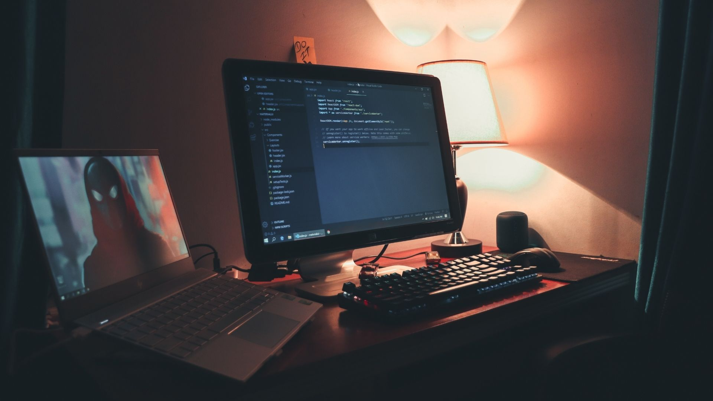

Advanced Programming
 Autor: Halil İbrahim GÜNBULAK
GitHub
Click
here
for Github Account.
Class Works
CW1 - Browser tools
CW2 - Objects and Arrays
CW3 - Text to Objects
CW4 - Object Inspector
CW5 - Classes and Maps
CW6 - Fetch Remote File
CW7 - Reading Local Files
CW8 -SubtleCrypto: SHA
CW9 -Improve your private repo & HW1
CW10 - Event listeners
CW11 - GitHub Users
CW12 - Open Weather
Home Works
HW1 - Math Multiply Table
HW2 - Edit Repository
HW3 - Dancing Square
Term Project
Repository
Go Repository